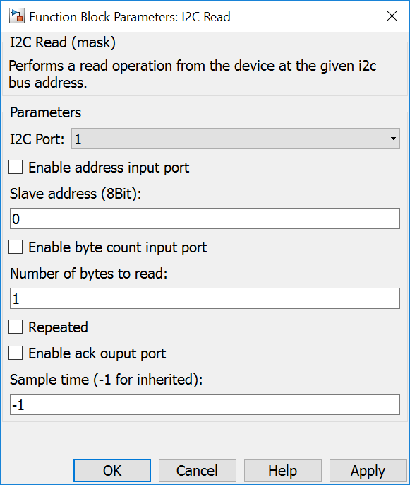

5.3.2. I2C Read
5.3.2.1. Description
This block reads one or multiple bytes from a device at the given bus address. The address must be provided as an 8 bit address regardless of the value of the LSB (read/write bit).
The block interface can be configured by the Parameters Dialog Box:
- The minimal variant has a static i2c address and reads a predefined number of bytes from the device.
{kind=link}
- The maximal variant allows a dynamic i2c address and a dynamic number of bytes to be read. The ack port outputs communication errors.
{kind=link}
5.3.2.2. Data Type Support
All input ports expect an uint8 data type. The output port writes values with an uint8 data type.
5.3.2.3. Parameters Dialog Box
I2C Port
specifies an internal used I2C port number. It is used to generate unique instance names when more I2C busses are used in the same model and to tie config, read and write blocks together.
Enable address input port
Enables an input port that provides the device address from which the mcu should read data.
The address input port allows reading from different devices with the same read block by changing the value at the address input port.
Slave address
8bit address of the i2c bus device.
Note
If the Enable address input port checkbox is checked the Slave address field is ignored.
Enable byte count input port
If the number of data to be read changes during program execution the external byte count port can be activated to provide the amount of data to be read from the device.
Number of bytes to read
This parameter serves two purposes.
- If external byte count is disabled, the block reads the configured amount of bytes every time it is executed.
- If external byte count is enabled, the parameter sets the maximum number of bytes (i.e. the data port width in simulink) which can be read.
Repeated
If enabled no I2C STOP condition is send after completing the read operation.
Enable ack output port
Enables a block output port where the success of the operation can be read. Please see the mbed documentation for further information.
- “0” output: no error during communication
- “1” output: error during communication
5.3.2.4. Example
In the example data read from a PCF8574 at address 0x40 is bitmasked. Bits 0 and 1, used as inputs, are written to LED1 and LED2.
The user button is written to bit 3 of the PCF8574. Unused bits and both input bits has to be set to 1 (please see the datasheet). The result is written back to the PCF8574.

5.3.2.5. Code Generation
Instance names of mbed I2C classes are created by concatenating i2c and <I2C Port>.
Step Function
creates one line in void <Model Name>_step(void) function
lvalue = (uint8_T)i2c<I2C Port>.read(<Slave address>, <Addr of Outputbuffer>, <Length of Outputbuffer>, <Repeated>);
when Enable ack output port is checked or
i2c<I2C Port>.read(<Slave address>, <Addr of Outputbuffer>, <Length of Outputbuffer>, <Repeated>);
when Enable ack output port is unchecked. <Slave address> and <Length of Outputbuffer> are defined by the block mask or can come from input ports.